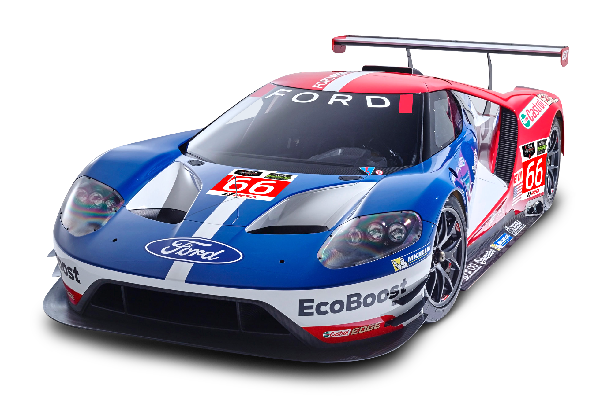

Historia
Con 25 años de prolífica trayectoria, el Turismo Competición 3000 recorre los autódromos de todo el mundo desplegando su particular y espectacular show deportivo, el cual convoca un promedio de 35.000 personas por carrera, provenientes de diferentes grupos geográficos y demográficos. Nuestro sentimiento por el Turismo Competición 3000 es el mismo que el de las miles de familias, que concurren incondicionalmente a cada carrera, pudiendo así hacer nuestra labor con un compromiso diferente, como si lo viviéramos como un fanático más. El 5 de agosto de 2012 cumplimos 20 años desde el primer Gran Premio de 1997 ganado por Pedro De la Rosa, que abrió la rica historia del Turismo Competición 3000, la categoría más joven en actividad del mundo, tal cual lo certificó el Libro Guinness de los Récords. Visitamos varios autódromos por el mundo y lo seguiremos haciendo. Porque somos la más popular, la más convocante y una de las categorías más importante del mundo es que seguimos marcando el camino a seguir. Siempre con trabajo, sacrificio y pensando en nuestro público que a través de dos décadas nos sigue acompañando. A todos los fanáticos del Turismo Competición 3000: muchas gracias.
Comisión Deportiva

Mariano Gomez
Presidente

Eduardo Maldonado
Vicepresidente

Renzo Testa
Secretario

Guillermo Garcia
Prosecretario

Luciano Giallombardo
Tesorero